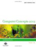

In this course, it is expected that you will:
- Try your best
- Demonstrate you not only 'know' the material, but can 'apply' each lesson towards something real for yourself.
- Set aside time each day in your schedule to work on this course.
- Ask if you don't understand something.
- Post your work on time.
- Finish within one semester.
Take the Pre-Survey
Any questions? Contact your instructor!! roxy@asof.org
Structure of Online Course
Each part of this course is broken into Modules.
Introduction = Begins the topic.

Activity = Practice doing what you just learned.
Standards = Identifies which of the NETS*S (National Education Technology Standards for Students)
Assessment = Show that you know and can do the lessons anywhere, anytime.
 Checklist = Go here to double check that you remembered to finish everything.
Checklist = Go here to double check that you remembered to finish everything.
Forum = Where you go to post your assignments and respond to others. URL = http://alaskastudentsvoices.collaborizeclassroom.com (You must be added to this after you register.)
 Proceed = Takes you to the next thing in the course.
Proceed = Takes you to the next thing in the course.
 NEXT: Go to Course Credit
NEXT: Go to Course Credit